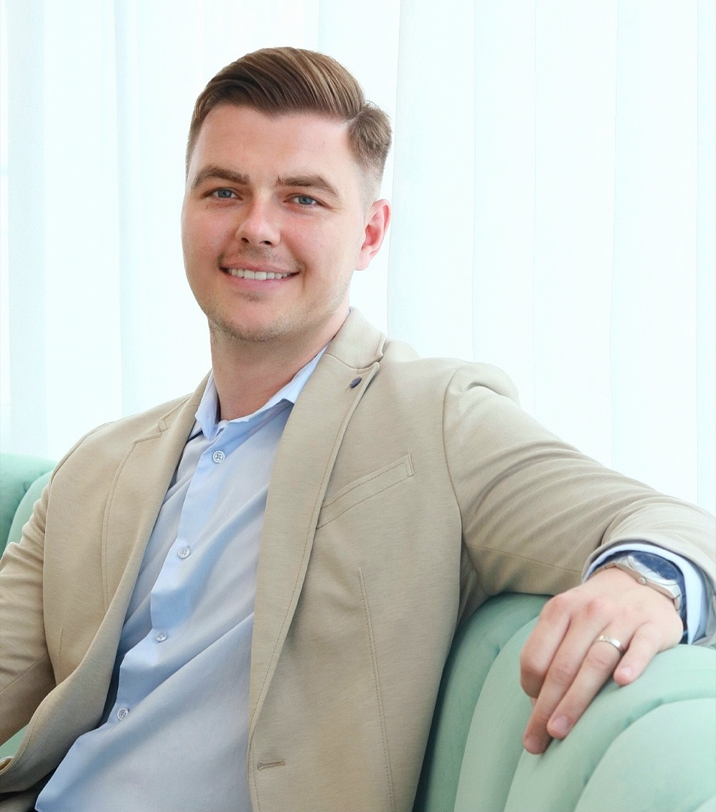

Atestovaný plastický chirurg s pasiou pre estetickú a rekonštrukčnú chirurgiu

MUDr. Filip Čaniga, MPH
Som atestovaný plastický chirurg pôsobiaci v Bratislave. Venujem sa celému spektru estetickej a rekonštrukčnej chirurgie — od augmentácie prsníkov a liposukcie, cez blefaroplastiku a otoplastiku, až po komplexnejšie zákroky ako abdominoplastika s riešením diastázy či gynekomastia.
K mojim špecializáciám patrí aj chirurgia ruky — predovšetkým syndróm karpálneho tunela a Dupuytrenova kontraktúra. Pri zväčšovaní pŕs využívam modernú metódu Preservé™, ktorá kladie dôraz na šetrnosť a prirodzený výsledok. Špeciálne sa venujem aj problematike lipedému, ktorá si vyžaduje citlivý a odborný prístup.
Vyštudoval som Lekársku fakultu Univerzity Komenského v Bratislave (2012–2018). V roku 2023 som získal titul Master of Public Health (MPH) na European Business & Management Institute v Prahe a v roku 2024 som úspešne absolvoval špecializačnú skúšku v odbore plastická chirurgia. Počas štúdia som absolvoval zahraničné stáže v Nemecku.
Ako lekár sa neustále vzdelávam — pravidelne sa zúčastňujem domácich a zahraničných kongresov a odborných školení, vrátane masterclass workshopov v Marbelle a Düsseldorfe. Plynulo komunikujem v angličtine a nemčine, vďaka čomu mám prístup k najaktuálnejším poznatkom priamo zo zdroja. Od februára 2025 som súčasťou tímu eveclinic.